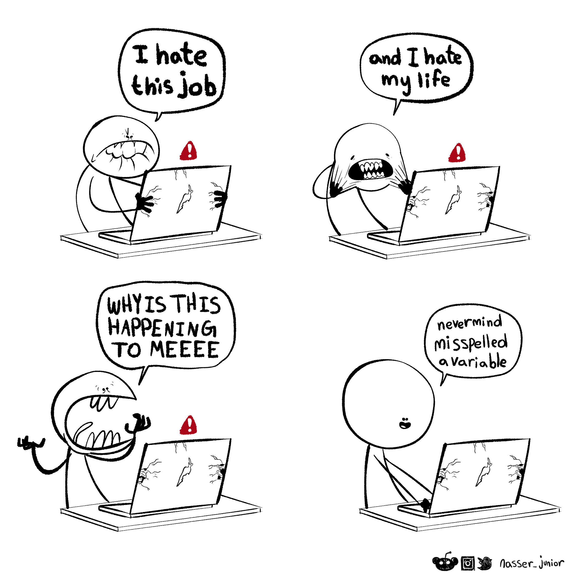

Debugging Package Code
Now that you are writing your code into a package, you have a lot of custom functions to keep track of! You’ve probably developed some good strategies and habits for fixing bugs in your code, but now it’s time to get a bit more structured with your troubleshooting.
If something in your code isn’t working as expected, your job is to figure out the following, in order:
What went wrong: How exactly are the results different from what you anticipated?
Where is the problem: What function caused the problem? Where exactly inside that function did it happen?
Why is it not working: What do you need to change to make it better?
Let’s go over some strategies and tools for the three steps.
What went wrong?
If you’ve made it to this point, you already know something is wrong! This is why unit tests are so critical: they can help you spot moments where your output was not what you expected.
Before you begin debugging, figure out exactly what flagged the problem: what output did you expect and what output did you see?
Next, try to reproduce the error. Find or create a small, self-contained piece of code that shows the problem happening. This is called a reproducible example.
The reprex package
Reproducible examples are so important to open-source collaboration, the tidyverse contains a package specifically to help people create and share them.
Read this vignette: https://reprex.tidyverse.org/articles/learn-reprex.html
Where is the problem?
Now that you found something going wrong, we need to track down the exact line of code that’s causing the problem.
Sometimes, you need to go no further than actually reading the error message!
Although error messages can be unclear at times, they are still your best first line of defense. If the error message provides a snippet of code after the words Error in, this is of course where you should look!
Interactive debugging
If you can’t find the error from the message alone, your best bet is interactive debugging, where you run your code step by step until you find the problem.
For code outside a function, it is easy to run step by step. Inside a function, though, you need additional tools. We recommend starting with debugonce().
When you call debugonce([function_name]), it prepares to start debugging the next time you trigger that function. When you do call the prepared function, you will be taken into the environment of that function, where you can examine object values and run code line-by-line.
Try running the following to practice interacting with the debugger.
In your console you can hit “Enter” to step through the function until the moment it breaks. In your environment you can see the value of the argument x that was received when we passed in my_vec.
The following code triggers an error. Oh no!
Use the error message to identify the function inside of the
sd()function where the error actually occurs.Use
debugonce(var)to find the exact line of code in the var function where the error is triggered.
Why isn’t it working?
Once you find where the problem is, your last task is to figure out how to fix it!
Have you ever spent way too long looking for complicated solutions to a coding problem, only to realize you’d spelled one word wrong? If so, you aren’t alone!

Let’s think through some common types of bugs you can look for, before you get in the weeds on more complicated solutions.
Typos and Misspellings
R, unfortunately, doesn’t speak English. It has no ability to realize that when you wrote fitler, you of course meant filter; or that your dataset Dat is the same as dat.
The most common error you’ll get when you’ve simply mistyped something is object not found.
# find the mean of the numbers 1 to 10
Mean(1:10)Error in `Mean()`:
! could not find function "Mean"Typically, these kind of bugs are easy to fix; simply find the not found part in your code and figure out the correct spelling. Where this can get hairy is if a different function does exist under the incorrect name.
Consider, for example, the functions sqrt() (“square root”) and sort() (“sort in order”). These will both run without error, but if you meant to use one and accidentally wrote the other, it’ll be hard to track down. For these types of bugs, you’ll probably need some of the deeper techniques later in this chapter.
Problems with package dependencies
Another reason that a function might be not found is that you have not loaded the library that provides it.
inv.logit(1:10)Error in `inv.logit()`:
! could not find function "inv.logit" [1] 0.7310586 0.8807971 0.9525741 0.9820138 0.9933071 0.9975274 0.9990889
[8] 0.9996646 0.9998766 0.9999546In a Quarto document, you need to use library() to declare all your packages at the start of the document. You may have a library loaded in your RStudio environment, so everything appears to work, but when you render your notebook the function is no longer found.
Similarly, in an R package, your functions need to import anything you use from other packages. This can be done in roxygen2 style documentation with
#' @importFrom boot inv.logitSyntax Errors
In addition to typos in the words of your code, you might accidentally leave out important punctuation. This is called a syntax error.
One common R error message for syntax errors is unexpected symbol - this tells you that the code parser got confused when it didn’t see the comma, pipe, or other symbol it expected.
In the below example, the code expected a , but found na.rm instead.
mean(1:10 na.rm = TRUE)Error in parse(text = input): <text>:1:11: unexpected symbol
1: mean(1:10 na.rm
^Another common error message is incomplete expression, which typically tells you that you left your code unfinished - perhaps a missing parenthesis or a pipe with no next step.
mean(1:10Error in parse(text = input): <text>:2:0: unexpected end of input
1: mean(1:10
^penguins |>Error in parse(text = input): <text>:2:0: unexpected end of input
1: penguins |>
^Much like misspellings, syntax errors are usually easy to find and fix. Simply find the code piece that the error message points out, and look for misformatted punctuation.
Mismatched data types or structures
As a human, the following objects might seem to contain the exact same information:
To a computer, though, they are three different object types and three different object structures. Watch what happens when we try to take the mean of the numbers (3,4,5) using these objects:
mean(obj1)[1] 4mean(obj2)Warning in mean.default(obj2): argument is not numeric or logical: returning NA[1] NAmean(obj3)Warning in mean.default(obj3): argument is not numeric or logical: returning NA[1] NAobj1 succeeds, because it has the type (numeric) and structure (vector) that the function mean() is designed to accept.
obj2 fails - even though the data is numeric, the structure is a list and mean() is not designed for that.
obj3 fails - even though the structure is a vector, the data type is a factor rather than numeric.
When debugging, keep an eye out for moments where you may have given a function an input object of the wrong type or structure. This can sometimes come about because you misunderstand the type or structure that is returned by another function, and you pass it along.
Sometimes you can coerce an object into the right type or structure, by telling R to “force” the change. For example, we can use unlist() to turn our obj2 into a vector:
However, this is not always a magic fix. Consider using as.numeric() to convert our obj3 from a factor to a number:
mean(as.numeric(obj3))[1] 2Yikes! This is the wrong answer! What happened here is that R stores factors as integers - a 1 stands in for the first category, a 2 for the second. It doesn’t matter if those categories are “3,4,5” or “a,b,c”; they will still be stored as numbers 1,2,3. So, forcing this object to be numeric doesn’t “read” the category names of "3", "4", and "5" - it pulls out the index numbers 1, 2 and 3!
Incorrect computations
Once we start getting into bugs that don’t throw an error message, it gets much harder to do quick checks. It’s always possible that you’ve accidentally written your function to do something different than you intended, but the output still looks plausible.
add_two <- function(x) {
x + 3
}
add_two(5)[1] 8This is why writing unit tests is so important!
Misunderstanding of data meaning
A final category of bug to look for, especially in programming for Data Science, is a procedure being applied that doesn’t make sense for the data context.
For example, suppose you are studying the three penguin species in the palmerpenguins dataset, and you write this data cleaning code:
penguins <- penguins |>
mutate(
species_numeric = case_when(
species == "Adelie" ~ 1,
species == "Chinstrap" ~ 2,
species == "Gentoo" ~ 3
)
)Although this code is correctly written and does what you intended, it is not at all appropriate to change a categorical variable to arbitrary numbers! If you were to fit models, perform statistical tests, or visualize data using this new numeric variable, you would be in danger of false data conclusions.
Remember that you, as the R programmer, are responsible for making good data choices in your code.
For each of the following errors (using nonsense function names), state what kind of bug you would look for first.
to_divide <- list(15, 5)
divide(to_divide)Error in `x[1] / x[2]`:
! non-numeric argument to binary operatormultiplie(3, 5)Error in `multiplie()`:
! could not find function "multiplie"square_root(49)Error in `square_root()`:
! could not find function "square_root"https://r-statistics.co/R-Debugging.html
https://srvanderplas.github.io/stat-computing-r-python/part-gen-prog/06-debugging.html